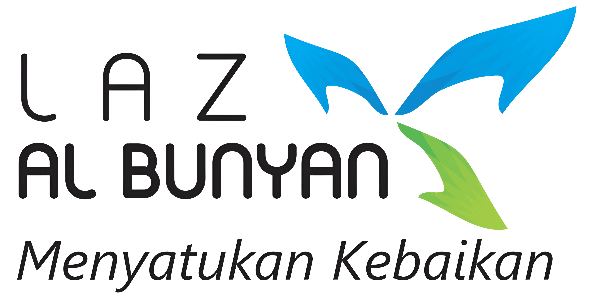
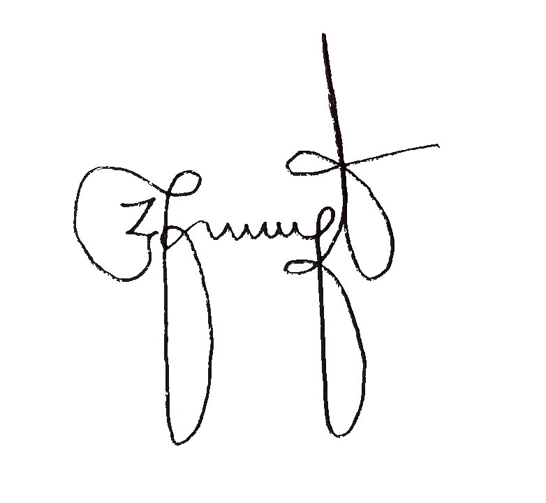

| No Bukti Setor Zakat | : | BSZ-AB400000 |
| Telah Terima Dari | : | INDRA GUNAWAN |
| NPWP | : | - |
| Alamat | : | Jl. Bambu Apus Vi No 3 Pondok Bambu Jakarta Timur 13430 |
| No Hp | : | 081210462572 |
| Jumlah | : | Rp200.000 |
| Terbilang | : | Dua Ratus Ribu Rupiah |
| Untuk Pembayaran | : |
